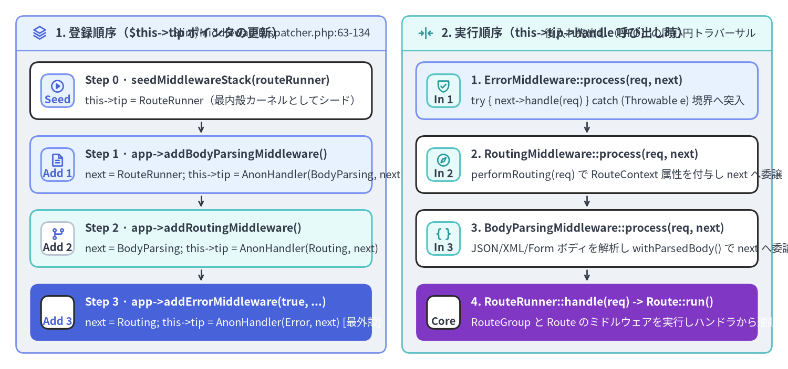
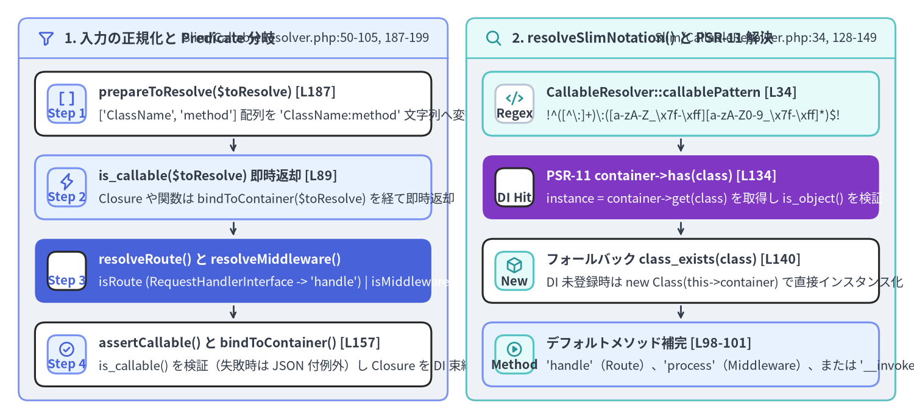

MiddlewareDispatcher の LIFO 玉ねぎ構造と CallableResolver 内部実装
Slim 4 の PSR-15 リクエスト実行モデルの心臓部を担うのが、Slim\MiddlewareDispatcher（Slim/MiddlewareDispatcher.php、全 290 行 / 177 LOC）と Slim\CallableResolver（Slim/CallableResolver.php、全 201 行 / 131 LOC）の2つのクラスです。この2つが連携することで、MiddlewareInterface インスタンス・Closure・'Class:method' 文字列・PSR-11 コンテナサービス ID といった多様な形式のミドルウェアやハンドラが、単一の同心円状 RequestHandlerInterface チェーンへと正規化されます。

Source Code
from drawlib.canvas import save, setup
from drawlib.icons import phosphor
from drawlib.smartarts import CardList, Panel
from drawlib.styles import Colors, Styles
setup(width=196, height=92, dpi=150)
# Left Panel: Construction Order (LIFO Stack Growth)
p_left = Panel(
"1. 登録順序（$this->tip ポインタの更新）",
"Slim/MiddlewareDispatcher.php:63-134",
style=Styles.Neutral.patch(shape_r=2.0),
header_style=Styles.PrimaryNeutral.patch(shape_line_width=1.2),
text_style=Styles.DarkBold.patch(text_size=10.8),
description_style=Styles.Dark.patch(text_size=9.8),
icon=phosphor.stack,
icon_style=Styles.PrimaryBold,
header_variant="filled",
header_height=8.5,
)
p_left.draw((4.0, 4.0), width=92.0, height=84.0)
lx, lw, lh = p_left.get_content_box((4.0, 4.0), width=92.0, height=84.0, padding=(3.5, 3.0))
reg_steps = CardList(
style=Styles.White,
text_style=Styles.DarkBold.patch(text_size=10.2),
description_style=Styles.Dark.patch(text_size=9.8),
badge_shape="rounded_rect",
badge_style=Styles.PrimaryNeutral,
badge_text_style=Styles.PrimaryBold.patch(text_size=9.8),
icon_style=Styles.PrimaryBold,
direction="vertical",
spacing=2.6,
show_arrows=True,
arrow_style=Styles.DarkBold.patch(line_arrow_head_scale=10, line_width=1.3),
)
reg_steps.add(
"Step 0 · seedMiddlewareStack(routeRunner)",
"this->tip = RouteRunner（最内殻カーネルとしてシード）",
badge_text="Seed",
icon=phosphor.play_circle,
)
reg_steps.add(
"Step 1 · app->addBodyParsingMiddleware()",
"next = RouteRunner; this->tip = AnonHandler(BodyParsing, next)",
badge_text="Add 1",
icon=phosphor.file_text,
style=Styles.PrimaryNeutral,
)
reg_steps.add(
"Step 2 · app->addRoutingMiddleware()",
"next = BodyParsing; this->tip = AnonHandler(Routing, next)",
badge_text="Add 2",
icon=phosphor.git_branch,
style=Styles.SecondaryNeutral,
badge_style=Styles.White.patch(shape_line_color=Colors.Gray4),
badge_text_style=Styles.DarkBold.patch(text_size=9.8),
)
reg_steps.add(
"Step 3 · app->addErrorMiddleware(true, ...)",
"next = Routing; this->tip = AnonHandler(Error, next) [最外殻]",
badge_text="Add 3",
icon=phosphor.shield_warning,
style=Styles.PrimaryFlat,
text_style=Styles.WhiteBold.patch(text_size=10.2),
description_style=Styles.White.patch(text_size=9.8),
badge_style=Styles.White,
badge_text_style=Styles.PrimaryBold.patch(text_size=9.8),
icon_style=Styles.WhiteBold,
)
reg_steps.draw(xy=lx, width=lw, height=lh)
# Right Panel: Runtime Traversal Order (Inward Request -> Outward Response)
p_right = Panel(
"2. 実行順序（this->tip->handle 呼び出し時）",
"後入れ先出し（LIFO）の同心円トラバーサル",
style=Styles.Neutral.patch(shape_r=2.0),
header_style=Styles.SecondaryNeutral.patch(shape_line_width=1.2),
text_style=Styles.DarkBold.patch(text_size=10.8),
description_style=Styles.Dark.patch(text_size=9.8),
icon=phosphor.arrows_in_line_horizontal,
icon_style=Styles.SecondaryBold,
header_variant="filled",
header_height=8.5,
)
p_right.draw((100.0, 4.0), width=92.0, height=84.0)
rx, rw, rh = p_right.get_content_box((100.0, 4.0), width=92.0, height=84.0, padding=(3.5, 3.0))
run_steps = CardList(
style=Styles.White,
text_style=Styles.DarkBold.patch(text_size=10.2),
description_style=Styles.Dark.patch(text_size=9.8),
badge_shape="rounded_rect",
badge_style=Styles.SecondaryNeutral,
badge_text_style=Styles.DarkBold.patch(text_size=9.8),
icon_style=Styles.SecondaryBold,
direction="vertical",
spacing=2.6,
show_arrows=True,
arrow_style=Styles.DarkBold.patch(line_arrow_head_scale=10, line_width=1.3),
)
run_steps.add(
"1. ErrorMiddleware::process(req, next)",
"try { next->handle(req) } catch (Throwable e) 境界へ突入",
badge_text="In 1",
icon=phosphor.shield_check,
style=Styles.PrimaryNeutral,
)
run_steps.add(
"2. RoutingMiddleware::process(req, next)",
"performRouting(req) で RouteContext 属性を付与し next へ委譲",
badge_text="In 2",
icon=phosphor.compass,
)
run_steps.add(
"3. BodyParsingMiddleware::process(req, next)",
"JSON/XML/Form ボディを解析し withParsedBody() で next へ委譲",
badge_text="In 3",
icon=phosphor.brackets_curly,
)
run_steps.add(
"4. RouteRunner::handle(req) -> Route::run()",
"RouteGroup と Route のミドルウェアを実行しハンドラから逆順復帰",
badge_text="Core",
icon=phosphor.lightning,
style=Styles.AccentFlat,
text_style=Styles.WhiteBold.patch(text_size=10.2),
description_style=Styles.White.patch(text_size=9.8),
badge_style=Styles.White,
badge_text_style=Styles.DarkBold.patch(text_size=9.8),
icon_style=Styles.WhiteBold,
)
run_steps.draw(xy=rx, width=rw, height=lh)
save()
1. MiddlewareDispatcher が LIFO 玉ねぎ構造を合成する仕組み
リクエストごとに配列のインデックスカーソルを進める方式のディスパッチャとは異なり、Slim\MiddlewareDispatcher（Slim/MiddlewareDispatcher.php:35-289）は単一のポインタプロパティ protected RequestHandlerInterface $tip;（40 行目）のみを保持し、ミドルウェアが追加されるたびに無名 RequestHandlerInterface クラスで $this->tip を外側から包み込む連結リスト（単方向クロージャチェーン）を構築します。
カーネルのシード処理（Slim/MiddlewareDispatcher.php:50-74）
MiddlewareDispatcher の初期化時、seedMiddlewareStack(RequestHandlerInterface $kernel) によって中心核となる $kernel が $this->tip に代入されます。
- アプリケーション階層（
Slim/App.php:74）では、$kernelはRouteRunnerインスタンスです。 - ルート階層（
Slim/Routing/Route.php:140）では、$kernelはRequestHandlerInterfaceを実装するRouteインスタンス自身です。
// Slim/MiddlewareDispatcher.php:63-74
public function seedMiddlewareStack(RequestHandlerInterface $kernel): void
{
$this->tip = $kernel;
}
public function handle(ServerRequestInterface $request): ResponseInterface
{
return $this->tip->handle($request);
}
add($middleware) における3分岐ディスパッチ（Slim/MiddlewareDispatcher.php:85-104）
$app->add($middleware) が呼ばれると、MiddlewareDispatcher::add() は引数の型を実行時に判定し、3つの専用メソッドへ振り分けます。
add() 内の分岐 |
判定条件（Slim/MiddlewareDispatcher.php） |
委譲先メソッド | 生成される無名 RequestHandlerInterface の動作 |
|---|---|---|---|
| 1. PSR-15 インスタンス | $middleware instanceof MiddlewareInterface（87 行目） |
addMiddleware()（113〜134 行目） |
($middleware, $next) を保持し $this->middleware->process($request, $this->next) を実行 |
| 2. 遅延解決文字列 | is_string($middleware)（91 行目） |
addDeferred()（144〜244 行目） |
リクエスト処理時の handle($request) が呼ばれるまでコンテナ解決・インスタンス化を遅延 |
| 3. PHP Callable | is_callable($middleware)（95 行目） |
addCallable()（254〜288 行目） |
Closure の場合は $this->container に bindTo() し、($this->middleware)($request, $this->next) を実行 |
addMiddleware()（Slim/MiddlewareDispatcher.php:113-134）のコードを見ると、ポインタの付け替えが極めて明快に実装されていることがわかります。
public function addMiddleware(MiddlewareInterface $middleware): MiddlewareDispatcherInterface
{
$next = $this->tip;
$this->tip = new class ($middleware, $next) implements RequestHandlerInterface {
private MiddlewareInterface $middleware;
private RequestHandlerInterface $next;
public function __construct(MiddlewareInterface $middleware, RequestHandlerInterface $next)
{
$this->middleware = $middleware;
$this->next = $next;
}
public function handle(ServerRequestInterface $request): ResponseInterface
{
return $this->middleware->process($request, $this->next);
}
};
return $this;
}
$next = $this->tip で直前の先頭ハンドラを退避し、それを内包する新しい無名クラスを $this->tip に代入するため、ミドルウェアは**後入れ先出し（LIFO: Last-In, First-Out）**で実行されます。
- 最初に
add()したミドルウェアはRouteRunnerのすぐ外側を包み、ルートハンドラの直前で実行されます。 - 最後に
add()したミドルウェアが最終的な$this->tip（最外殻）となり、リクエスト到着時に最初に実行されます（$app->addErrorMiddleware(...)を最後に登録すべき理由はこのためです）。
2. なぜ MiddlewareDispatcher::addDeferred() の認知複雑度は 26 なのか？
PNI501 による Slim v4.15.3 の AST 静的解析において、リポジトリ全体で最も認知複雑度（Cognitive Complexity）が高いメソッドとして検出されるのが MiddlewareDispatcher::addDeferred()（Slim/MiddlewareDispatcher.php:144-244、認知複雑度 = 26、全 101 行）です。なぜこのメソッドだけが突出して複雑なのでしょうか？
// Slim/MiddlewareDispatcher.php:173-240（addDeferred 内の無名 RequestHandlerInterface::handle）
public function handle(ServerRequestInterface $request): ResponseInterface
{
if ($this->callableResolver instanceof AdvancedCallableResolverInterface) {
$callable = $this->callableResolver->resolveMiddleware($this->middleware);
/** @var ResponseInterface */
return $callable($request, $this->next);
}
$callable = null;
if ($this->callableResolver instanceof CallableResolverInterface) {
try {
$callable = $this->callableResolver->resolve($this->middleware);
} catch (RuntimeException $e) {
// Do Nothing
}
}
if (!$callable) {
$resolved = $this->middleware;
$instance = null;
$method = null;
if (preg_match(CallableResolver::$callablePattern, $resolved, $matches)) {
$resolved = $matches[1];
$method = $matches[2];
}
if ($this->container && $this->container->has($resolved)) {
$instance = $this->container->get($resolved);
if ($instance instanceof MiddlewareInterface) {
return $instance->process($request, $this->next);
}
} elseif (!function_exists($resolved)) {
if (!class_exists($resolved)) {
throw new RuntimeException(sprintf('Middleware %s does not exist', $resolved));
}
$instance = new $resolved($this->container);
}
if ($instance && $instance instanceof MiddlewareInterface) {
return $instance->process($request, $this->next);
}
// ... 以降で [$instance, $method] 組み立てと Closure::bindTo($this->container) を実施
}
addDeferred() 内の高速経路と後方互換フォールバック経路の解剖
- 高速経路（
AdvancedCallableResolverInterface、175〜179 行目）: 通常の Slim 4 アプリケーションでは、$this->callableResolverは標準のSlim\CallableResolver（AdvancedCallableResolverInterface実装クラス）です。そのため 175 行目の条件式が常にtrueとなり、$this->callableResolver->resolveMiddleware($this->middleware)を呼んで即座に return する 実質 5 行の処理 で完了します。 - レガシー後方互換フォールバック経路（181〜239 行目）:
Slim
4.0.0当初のCallableResolverInterfaceにはresolve($toResolve): callableしか存在せず、オブジェクトを解決する際のデフォルトメソッドが'__invoke'に固定されていました。そのため、__invoke()を持たない純粋な PSR-15MiddlewareInterface実装クラス（process()メソッドのみを持つクラス）の文字列を渡すと、CallableResolverInterface::resolve()がRuntimeExceptionをスローしてしまうという問題がありました。 後のマイナーバージョンでAdvancedCallableResolverInterface::resolveMiddleware()が追加された際、サードパーティ製の独自CallableResolverInterface実装に対する後方互換性を維持するために 181〜239 行目のフォールバック処理が残されました。186 行目でcatch (RuntimeException $e) { // Do Nothing }により例外を握りつぶし、正規表現パース・$container->has()・instanceof MiddlewareInterface・new $resolved($this->container)をインラインで再実装していることが、認知複雑度26の直接的な原因となっています。
3. CallableResolver と $callablePattern の内部実装
Slim\CallableResolver（Slim/CallableResolver.php:32-200）は、ルートハンドラ・グループコールバック・ミドルウェア文字列・エラーレンダラを実行可能な PHP callable へ変換する final クラスです。

Source Code
from drawlib.canvas import save, setup
from drawlib.icons import phosphor
from drawlib.smartarts import CardList, Panel
from drawlib.styles import Colors, Styles
setup(width=196, height=90, dpi=150)
# Left Panel: Input Normalization & Predicate Dispatch
p_left = Panel(
"1. 入力の正規化と Predicate 分岐",
"Slim/CallableResolver.php:50-105, 187-199",
style=Styles.Neutral.patch(shape_r=2.0),
header_style=Styles.PrimaryNeutral.patch(shape_line_width=1.2),
text_style=Styles.DarkBold.patch(text_size=10.8),
description_style=Styles.Dark.patch(text_size=9.8),
icon=phosphor.funnel,
icon_style=Styles.PrimaryBold,
header_variant="filled",
header_height=8.5,
)
p_left.draw((4.0, 4.0), width=92.0, height=82.0)
lx, lw, lh = p_left.get_content_box((4.0, 4.0), width=92.0, height=82.0, padding=(3.5, 3.0))
pred_list = CardList(
style=Styles.White,
text_style=Styles.DarkBold.patch(text_size=10.2),
description_style=Styles.Dark.patch(text_size=9.8),
badge_shape="rounded_rect",
badge_style=Styles.PrimaryNeutral,
badge_text_style=Styles.PrimaryBold.patch(text_size=9.8),
icon_style=Styles.PrimaryBold,
direction="vertical",
spacing=2.6,
show_arrows=True,
arrow_style=Styles.DarkBold.patch(line_arrow_head_scale=10, line_width=1.3),
)
pred_list.add(
"prepareToResolve($toResolve) [L187]",
"['ClassName', 'method'] 配列を 'ClassName:method' 文字列へ変換",
badge_text="Step 1",
icon=phosphor.brackets_square,
)
pred_list.add(
"is_callable($toResolve) 即時返却 [L89]",
"Closure や関数は bindToContainer($toResolve) を経て即時返却",
badge_text="Step 2",
icon=phosphor.lightning,
style=Styles.PrimaryNeutral,
)
pred_list.add(
"resolveRoute() と resolveMiddleware()",
"isRoute (RequestHandlerInterface -> 'handle') | isMiddleware ('process')",
badge_text="Step 3",
icon=phosphor.git_fork,
style=Styles.PrimaryFlat,
text_style=Styles.WhiteBold.patch(text_size=10.2),
description_style=Styles.White.patch(text_size=9.8),
badge_style=Styles.White,
badge_text_style=Styles.PrimaryBold.patch(text_size=9.8),
icon_style=Styles.WhiteBold,
)
pred_list.add(
"assertCallable() と bindToContainer() [L157]",
"is_callable() を検証（失敗時は JSON 付例外）し Closure を DI 束縛",
badge_text="Step 4",
icon=phosphor.check_circle,
)
pred_list.draw(xy=lx, width=lw, height=lh)
# Right Panel: resolveSlimNotation() Regex & Container Lookup
p_right = Panel(
"2. resolveSlimNotation() と PSR-11 解決",
"Slim/CallableResolver.php:34, 128-149",
style=Styles.Neutral.patch(shape_r=2.0),
header_style=Styles.SecondaryNeutral.patch(shape_line_width=1.2),
text_style=Styles.DarkBold.patch(text_size=10.8),
description_style=Styles.Dark.patch(text_size=9.8),
icon=phosphor.magnifying_glass,
icon_style=Styles.SecondaryBold,
header_variant="filled",
header_height=8.5,
)
p_right.draw((100.0, 4.0), width=92.0, height=82.0)
rx, rw, rh = p_right.get_content_box((100.0, 4.0), width=92.0, height=82.0, padding=(3.5, 3.0))
slim_list = CardList(
style=Styles.White,
text_style=Styles.DarkBold.patch(text_size=10.2),
description_style=Styles.Dark.patch(text_size=9.8),
badge_shape="rounded_rect",
badge_style=Styles.SecondaryNeutral,
badge_text_style=Styles.DarkBold.patch(text_size=9.8),
icon_style=Styles.SecondaryBold,
direction="vertical",
spacing=2.6,
show_arrows=True,
arrow_style=Styles.DarkBold.patch(line_arrow_head_scale=10, line_width=1.3),
)
slim_list.add(
"CallableResolver::callablePattern [L34]",
"!^([^\\:]+)\\:([a-zA-Z_\\x7f-\\xff][a-zA-Z0-9_\\x7f-\\xff]*)$!",
badge_text="Regex",
icon=phosphor.code,
style=Styles.SecondaryNeutral,
badge_style=Styles.White.patch(shape_line_color=Colors.Gray4),
badge_text_style=Styles.DarkBold.patch(text_size=9.8),
)
slim_list.add(
"PSR-11 container->has(class) [L134]",
"instance = container->get(class) を取得し is_object() を検証",
badge_text="DI Hit",
icon=phosphor.database,
style=Styles.AccentFlat,
text_style=Styles.WhiteBold.patch(text_size=10.2),
description_style=Styles.White.patch(text_size=9.8),
badge_style=Styles.White,
badge_text_style=Styles.DarkBold.patch(text_size=9.8),
icon_style=Styles.WhiteBold,
)
slim_list.add(
"フォールバック class_exists(class) [L140]",
"DI 未登録時は new Class(this->container) で直接インスタンス化",
badge_text="New",
icon=phosphor.cube,
)
slim_list.add(
"デフォルトメソッド補完 [L98-101]",
"'handle'（Route）、'process'（Middleware）、または '__invoke' を補完",
badge_text="Method",
icon=phosphor.play_circle,
style=Styles.PrimaryNeutral,
)
slim_list.draw(xy=rx, width=rw, height=lh)
save()
1. なぜ prepareToResolve() は [ClassName::class, 'method'] を変換するのか？（Slim/CallableResolver.php:187-199）
PHP 8 では、['App\Controller\UserController', 'index'] のようなクラス名文字列の配列は、index() が static メソッドでない限り is_callable() が false を返します。もしユーザーが $app->get('/users', [UserController::class, 'index']) のようにインスタンスメソッドを配列形式で登録した場合、そのまま is_callable() に渡すと解決に失敗してしまいます。
そこで CallableResolver::prepareToResolve() は、is_callable() を判定する前に 2 要素の文字列配列 [$class, $method] を Slim 独自のコロン記法 "$class:$method" に書き換えます。
// Slim/CallableResolver.php:187-199
private function prepareToResolve($toResolve)
{
if (!is_array($toResolve)) {
return $toResolve;
}
$candidate = $toResolve;
$class = array_shift($candidate);
$method = array_shift($candidate);
if (is_string($class) && is_string($method)) {
return $class . ':' . $method;
}
return $toResolve;
}
2. resolveSlimNotation() における正規表現パースと PSR-11 コンテナ解決（Slim/CallableResolver.php:34, 128-149）
文字列化されたターゲットに対し、resolveSlimNotation(string $toResolve) は CallableResolver::$callablePattern を適用します。
// Slim/CallableResolver.php:34
public static string $callablePattern = '!^([^\:]+)\:([a-zA-Z_\x7f-\xff][a-zA-Z0-9_\x7f-\xff]*)$!';
- 第1キャプチャグループ
([^\:]+): コロン以外の任意の文字列（コンテナのサービス ID または完全修飾クラス名）にマッチします。コロンが禁止されているため、PHP の静的メソッド文字列'MyClass::myStaticMethod'はこの正規表現にはマッチせず、前段のif (is_callable($toResolve))（53 行目・89 行目）でそのまま通過します。 - 第2キャプチャグループ
([a-zA-Z_\x7f-\xff][a-zA-Z0-9_\x7f-\xff]*): PHP の有効なメソッド識別子にマッチします。 - インスタンス解決順序（134〜148 行目）:
$this->container && $this->container->has($class)が真であれば、$instance = $this->container->get($class)を取得し、is_object($instance)でオブジェクトであることを検証します。- コンテナに存在しない場合は
class_exists($class)を確認し（存在しなければRuntimeExceptionをスロー）、new $class($this->container)で直接インスタンス化します。
3. 呼び出し文脈に応じたデフォルトメソッド選択（resolve vs resolveRoute vs resolveMiddleware）
:method を持たない単一クラス名やオブジェクト（例：ListUsersAction::class や AuthMiddleware::class）が渡された場合、resolveByPredicate()（Slim/CallableResolver.php:86-105）は以下の表に従ってメソッド名を自動補完します。
CallableResolver のメソッド |
$predicate 判定条件 |
条件一致時の補完メソッド | 条件不一致時のフォールバック |
|---|---|---|---|
resolve($toResolve)（50 行目） |
なし | '__invoke'（59 行目） |
'__invoke' |
resolveRoute($toResolve)（68 行目） |
$toResolve instanceof RequestHandlerInterface（isRoute、110 行目） |
'handle'（PSR-15 RequestHandlerInterface::handle） |
'__invoke'（101 行目） |
resolveMiddleware($toResolve)（76 行目） |
$toResolve instanceof MiddlewareInterface（isMiddleware、118 行目） |
'process'（PSR-15 MiddlewareInterface::process） |
'__invoke'（101 行目） |
最後に bindToContainer(callable $callable)（Slim/CallableResolver.php:170-180）が、$this->container が存在しかつ $callable instanceof Closure である場合に $callable->bindTo($this->container) を呼び出すため、クロージャ形式のハンドラやミドルウェア内部で $this->get(...) によるコンテナ参照が可能になります。
続いて 第4章: FastRouteDispatcher・RouteRunner・実行戦略 に進み、FastRoute の正規表現コンパイルと RoutingMiddleware / RouteRunner による2段階ディスパッチの内部実装を解説します。